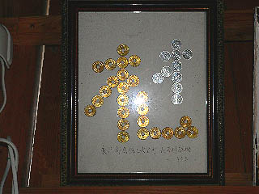

上越市寺巡り/新潟県上越市
秋の新潟に行ってきたよ。
行ったのは新潟県の西部の頸城（くびき）地方。日本有数の豪雪地帯だ。
頸城といえば瞽女（ごぜ）。
瞽女とは目の不自由な芸能者だ。その多くが旅芸人で遠くは長野関東、北海道にまで出向いたというから驚く他ない。
瞽女は主に２〜３人の集団で移動し旅を続けていたという。
瞽女集団で有名なのが長岡瞽女と高田瞽女だ。その高田瞽女の本拠地がここ上越市の高田なのである。
今回は上越市の寺社を巡り瞽女さんの足跡を辿ろう、という趣向だったが、残念ながらその残照は見る影もなく、結局、今考えてみると小ネタの寺巡りに終始してしまったような気がします・・・ま、勘弁してくださいな。
雁田神社/名立区
名立は元々頸城郡名立村だったが、合併により上越市名立区になった。
そんな名立の山中に雁田神社という神社がある。
ここは目や足腰に御利益がある神社で、かつては瞽女さんも参拝に来たという。
山の中にひっそりと立つ社殿は特に立派な訳でもなく極端に粗末な訳でもない。
風雪のため外壁は退色しているが比較的新しい社殿だと思う。
社殿の裏には何故か陰陽石が並んでいる。
リアル度は低いが、畑を耕したりしてソレっぽい石が出るとここに納めに来るのだろうか。
内部には様々な奉納物が掲げられている。
天井からはおびただしい数の千羽鶴。
ブラジル（日系）の方の奉納した提灯までありました。
そしてお約束の白い幟。東北の方の霊場みたいな雰囲気が漂う。
そして何といっても多くの額が目に付く。
足、腰、目といった文字は硬貨を並べて書かれている。
硬貨で鳥居や五重塔などを象った奉納額の変型バージョンという事か。
足や目はともかく腰あたりになると作るのも結構大変だろうなあ。
脾臓とか胆嚢とか脊髄とかだったらもっと大変ですね。
民間信仰の面白いところは、例えば奉納物ひとつとっても「こういうフォーマットで作りなさい」みたいな決まりが曖昧なので奉納者ひとりひとりのオリジナルセンスが堪能出来る事。
それは言い換えれば願いの強い人ほど、濃ゆい奉納品をつくる可能性が高い。
ここにも陰陽石、千羽鶴、提灯、コイン額などカタチにこだわらないユニークな奉納品がたくさんある。

「オ礼」願い事が成就してお礼参りに来たのだろう。1円玉と5円玉のコラボが美しい。足が治って良かったですね。
関係ないけど麓の神社の鳥居。
この青い鳥居も東北っぽい。
岩屋観音堂/名立区
名立駅近くに岩屋観音堂という表記を見つけたので行ってみた。
苔むした階段を登って行くと巨大な岩に押しつぶされそうなお堂があった。
ここは越後三十三番観音霊場の第一番の札所でもある。
寺は無住で他に訪れる人もなくひっそりとしている（もっとも今回巡った寺社で参拝客にはひとりも会わなかったが）。
一画には石仏に囲まれた池があった。ここも苔で覆われていてどこかお伽話に出てきそうな雰囲気であった。
板山不動尊/大島区
大島区にある板山不動尊は石仏が並ぶ洞窟が有名だ。
 奇麗な水が流れる谷に沿っていくと滝の脇に洞窟がある。
洞窟の中は薄暗い。洞窟といってもトンネル状ではなく間口の広い、奥行きの浅い洞窟で、岩の割れ目といった方がよさそうだ。
ついでに天井高は1.5〜2メートル程度。奥の方は頭がぶつかりそうだ。
中央の祠の左右には石仏がズラ〜っと並んでいる。
訪れる人もあまりいないであろう洞窟の中に半円状に整然と並んでいる石仏はある意味凄みを感じさせてくれる。
洞窟の中から滝を見る。
雨が激しくなってきたので、雨宿りには丁度良かった。
奇麗な水が流れる谷に沿っていくと滝の脇に洞窟がある。
洞窟の中は薄暗い。洞窟といってもトンネル状ではなく間口の広い、奥行きの浅い洞窟で、岩の割れ目といった方がよさそうだ。
ついでに天井高は1.5〜2メートル程度。奥の方は頭がぶつかりそうだ。
中央の祠の左右には石仏がズラ〜っと並んでいる。
訪れる人もあまりいないであろう洞窟の中に半円状に整然と並んでいる石仏はある意味凄みを感じさせてくれる。
洞窟の中から滝を見る。
雨が激しくなってきたので、雨宿りには丁度良かった。
西願寺/吉川区
吉川区にある西願寺。
ここは町田のえんま堂と呼ばれている。
本堂の右手にある閻魔堂を覗いてみると立派な閻魔様がおわした。
左に地蔵菩薩、右に脱衣婆を従え、道々の裁判長っぷりである。
しかし怖いのか可愛いのか微妙な顔付きである。脱衣婆も。
人頭杖。死者の生前の行いを判定する装置。
コレが置いてあるトコロはかなり本格的な十王堂（閻魔堂）といってイイのではなかろうか。
雁田神社/浦川原区
浦川原区にも雁田神社があった。
この上越市内だけでもいくつか雁田神社はある。この地方では雁田信仰が盛んなようである。
とはいえ名立の雁田神社に比べて小さな社殿であった。
それよりもロケーションが民家の裏山で、人に聞かなければ絶対判らないようなところに建っていた。
ちなみにこの神社に辿り着くまでに図書館の司書の方3人がかりで住宅地図を引っ張り出してきて一緒に探してもらったり、行ってみれば廃屋や観音堂と神社を間違えたり、民家の庭に入っちゃったり、渡りもしないでいい用水をジャンプして落ちそうになったり、雨がザーザー降ってきたり、途中トイレの水が流れなかったり、駐車場がなくってもんの凄くタイトなトコロに駐車したりと散々な目に逢いながら何とか辿り着いたのであった。
内部はやはり千羽鶴と幟がひしめいた。
幟は名立の雁田神社に比べて痛んでいた。
雁田を「かるた」とも読むようだ。
名立の雁田神社の方がたくさん幟を奉納している、という事なのだろう。
日光寺/浦川原区
浦川原の山中にある日光寺。
この寺ではかつて瞽女さんが目を治しにお籠りをした事もあったという。
山門を潜ると池があり、橋を渡って本堂に至る。
小さな山寺なれど上品なアプローチである。
ちなみに山門の脇にいた仁王さんは平面でした・・・
内部の欄間には多くの額が架かっている。
ここも目の神様として人々の信仰を集めているのだ。
名立の雁田神社で見たような「め」の額が多い。
眼病治癒祈願の絵馬といえばめの字が左右対称に向かい合っているモノが有名だが、この辺ではそういう絵馬は見なかった。
5円玉をダブルに組んだ「め」の字は極太ラインでゴージャスさと本気具合をアピールしてました。
参詣絵馬もちらほら。
下左の参詣絵馬はお堂と橋の欄干と手前の敷石と鳥居と人物の位置関係がイマイチ分かりにくい。
なんだかだまし絵を見ているような気分になる。
乳絵馬もあった。
仏壇の奥から冷風が吹き付けているような絵馬。
スピリチュアルパワーを浴びている、という解釈で宜しいんでしょうか？
この絵馬が一番面白かったです。
あとかなり大きめのサイズの寺院絵図。恐らく実在の寺ではないと思われる。
というのも（画像では見難くて恐縮です）明治の第一銀行本館のような和風と洋風がミックスした擬洋風建築やランドマークタワーみたいな櫓など。かなりキテレツな絵図である。族の特攻服の作品で衝撃を与え、六本木ヒルズとか三越百貨店の作品で有名な山口晃氏の作品のようだ。
ってゆーか、ホントにこんな寺があったら俺が行きたいぞ！
頸城の山の中で気鋭の現代美術家の作品と同じベクトルを感じる絵を見られるとは何とも不思議な気分であった。
お寺の方に話を伺うと、これでもかなり処分したとか。かつては本堂にびっしりと絵馬や額が掲げられていたのだろうか。
地獄絵図も抜かりはありません。
本堂の右手には地蔵菩薩像がある。
足元には立体版賽の河原が。
この手のモノは初めて見た。
もしかしたら現在の立体地獄の走りなのでは。
足元の人形は恐らく土人形だろう。
石を積む子、ハイハイしている赤ちゃん、泣いている子、それぞれ悲しみに暮れている様が表わされている。
ホコリが丁度良い具合に被っていて逆に地面のリアル感が出てました。
鬼も片手が脱落しているが子供イジメに余念がない。
本尊が納められている厨子のまわりには十二神将像が。
目の神様で十二神将ということは厨子の中身はは薬師如来なのだろう。
前には木彫りのザクロが一対置かれている。
ザクロの実が割れているのだろうが、遠目には歯を剥き出して笑っているように見える。
リトルショップオブホラーズみたいで怖かったです・・・
2005.10.
珍寺大道場 HOME